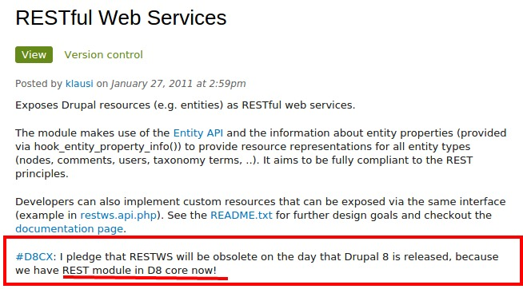

Gokul N K
- Graduated from Rashtreeya Vidyalaya (RVCE)
- From Bangalore
- Drupal Architect at Azri Solutions
- Formerly a Java Developer @ Mindtree
- Drupal since 2011
- Lead Maintainer for Automatr Module
- Cofounder of Aziteez
- Bowling Addict
Chakrapani R
- Graduated from IIIT-Hyderabad
- From Bangalore
- Drupal architect at Azri Solutions
- Drupal since 2009
- Author of Zoho D7 module
- Core contributor
- Led a team which contribed 50+ commits to core
- Drupal Bangalore
Overview
- Demystifying Headless Drupal
- State of Headless in Drupal
- Tools for building a Drupal Headless Site
- Comparative Study of existing Modules
- Let's Build a Drupal Backend
- Installing Drupal Phonegap
- Building our first Phonegap App
- A case study of a live Website
What is Headless Drupal ?
- Have you output xml or json from Drupsl?
- Yes ? You have already used Headless!
- It's a fancy term for Drupal as backend
- With your choice of front end
Custom Frontend ?
- Web App
- Mobile App
- Desktop App
- Any system that feeds on API provided by Drupal
Decoupling
- Decouples backend from front end
- Used by many other stacks
- It's been there from Drupal 6!
'Serving Pages' to 'Talking HTTP'
- Making the shift from "serving pages" to "talking HTTP"
- Drupal by default assumes that it only serves web pages
- This has to change for Drupal to be truly headless
Available options in Drupal
- Services
- RestWS
- Mean.IO
- Restful
Services
- By far the easiest to setup and use
- Widely used
- Views integration (views_services)
RestWS
- Leverages entity API
- Supports CRUD operations
- Will be part of Drupal 8

Mean.io
- If you are building your app on MEAN stack this is the module for you.
- Helps you setup mean stack app in easy steps.
- Mean shadow submodule helps you shadow drupal entities to the mean stack.
- You can also use mean.io stack with other drupal headless options.
Restful Module
- REST + HAL support.
- Developer oriented module.
- Developers can control what is exposed.
- Installation profiles available with a complete backend and frontend setup to get you
started.
Yes, We eat our own dog food!
Built on Mean stack + Headless Drupal
Thank You!
Chakrapani R / Gokul NK